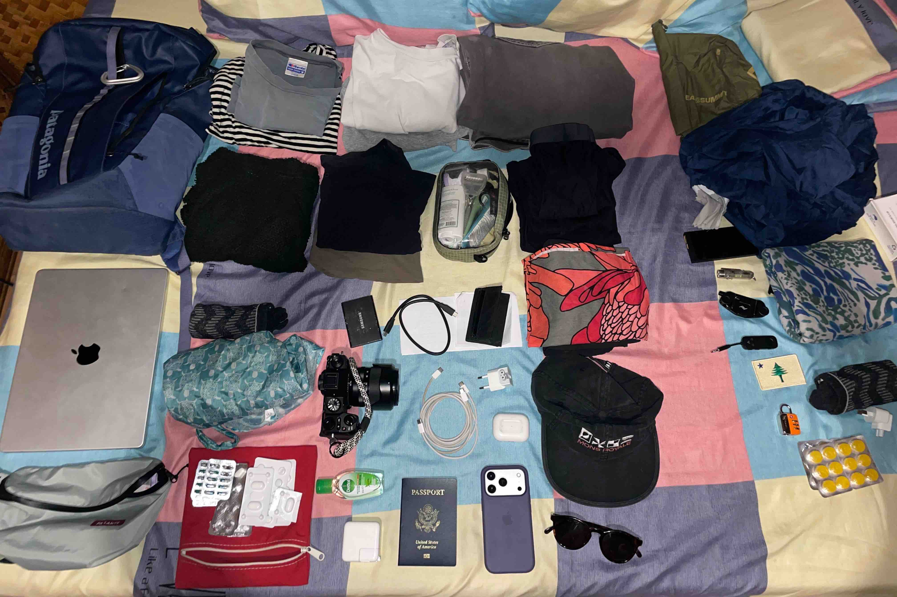
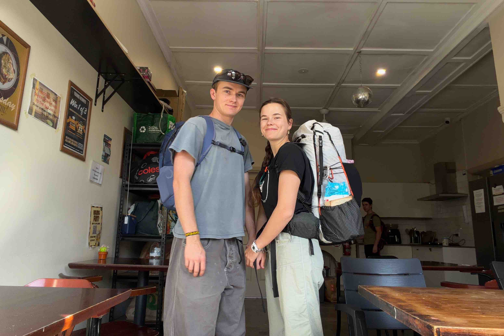

Little Backpack, Lots of Travel
Asia is the perfect place to super UL. When you’re hiking in the wildrness half your backpack is a whole lotta stuff you don’t need, sleeping bag, shelter, food. When you’re urban traveling all you really need is extra clothes. That’s it. And so that’s all I really took. Below is my packing list for 6 countries over the course of two months in SE Asia and India.

Backpack
Patagonia Black Hole 25L. I really love the black hole line. They are extra durable and very simple. One big compartment and I have a nice blue one. When I went to India in 2022 I was also still using a one backpack system and centering around the FjallRaven Raven 20L, and it was awesome. My favorite part were the small built in sleeves. With these you can organize cords and charges without needing to pack a designated tech pouch which is awesome. The G1000 fabric is very durable but after a year or two it turns brown and looks really ratty. Problems: it was a bit too small, wimpy laptop sleeve, separated into two main pockets. The black hole solved most, but not all of those problems. The size is perfect. And its just one big compartment, perfect for stuffing. But it loses the small built in sleeves. So no cord organization which isn’t a big deal, I’ve just got three, but it’s still something to think about. Problem: the size mesh isn’t durable, it would be very thought provoking to see what this thing would look like with the uhmwpe grid mesh that Pa’lante uses. I used one carabiner for hanging it on beds in hostels.
My fanny pack was my daypack. It lived in the front sleeve of my backpack and I would deploy it on days I wanted my camera out around town.
Clothing
Not a lot. Three tees, one long merino sleeve, one fleece, one pair of pants, two shorts, one pair of socks, four underwear. That is four outfits, for the most part my pants and long sleeve were used for my travel days. And I could have gone without the socks. I went with injinjis so they would work with my sandals, but even in the high Himalayas iit wasn’t cold enough to need them.
Shoes
It was so warm sandals is all I needed. Packing shoes can easily use half your space, and SE Asia is warm enough you don’t need closed toed shoes. I had my bedrocks and I loved them.

Electronics
I am listing these in the order of how much I needed them: phone, charger, camera, earbuds, laptop, SSD. Phone and charger are the only necessary electronics. Its crazy how in this day and age you can let your phone do all the traveling for you. You can order a cab, get a hotel, plan activities, get a flight, all on your phone and without talking to anyone. At some point I would really love to do a trip with no phone, because it would force me to talk to locals and get recommendations in a more authentic way, and with paper maps there would be no safety net to get you out of trouble. Something for a different time.
I only brought my laptop because I didn’t want to ship it home from New Zealand. But it was really nice to have so I could edit photos on the road. The SSD wasn’t necessary for this trip either but was just full of footage from NZ.
I really liked using a different film simulation for each country I went to. Then it gives a distinct shift to everything in your camera role. Nostalgic negative is nice for the blue oceans of new zealand same with the green rice fields of vietnam. For India I wanted something warmer, and there aren’t a lot of options, so I went with sepia which is bold and can be a headache sometimes.
I carried two extra apple adapters that I could swap out depending on which country I was in. In addition to the US I also had the Australia plug, and Europe, with these three I never had problems in all the 7 countries I visited.
Small Things
Passport, toothbrush, toothpaste, hand sani, bandana, dry bag, luggage lock (for hostels), visa, carabiner.
Items I could've left behind
Last second I left behind my bivy, rain jacket, and towel, and I even packed a liner, I though I’d be sleeping in a lot of gross bedding and wanted to keep away from the bugs, I didn’t need it.